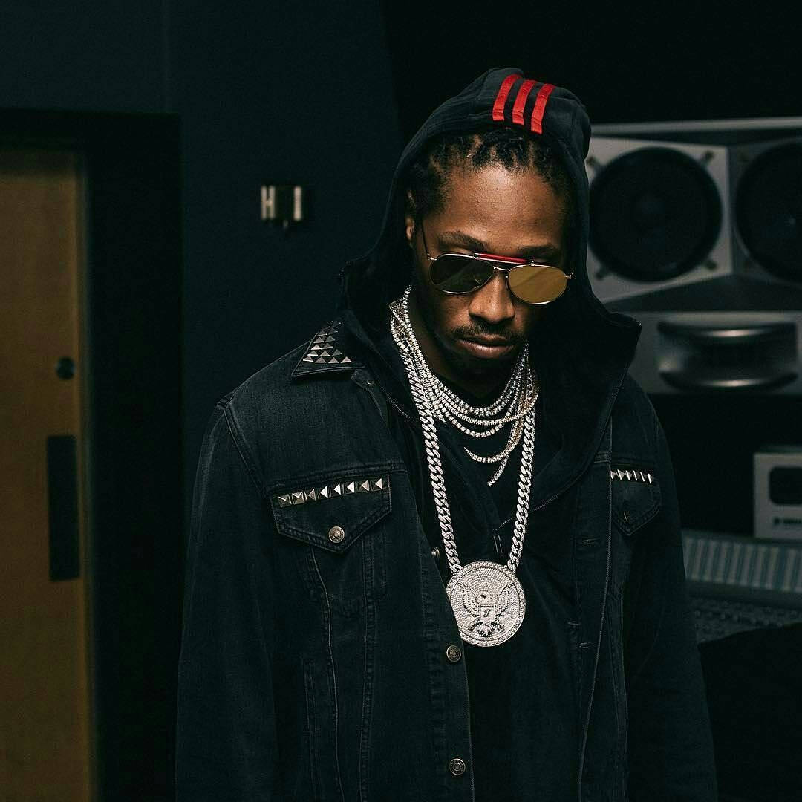

Featured Artists
Meet the talented artists shaping today’s music scene
Drake
Canadian rapper known for blending hip-hop and R&B with global hits like "One Dance", "God’s Plan", and "Hotline Bling".
Albums: Take Care, Nothing Was the Same, Scorpion.
Kendrick Lamar
American rapper known for deep storytelling and powerful social commentary. Pulitzer Prize-winning artist.
Albums: good kid, m.A.A.d city, To Pimp a Butterfly, DAMN.

Future
Pioneer of modern trap music with a melodic and autotuned style that shaped today’s hip-hop sound.
Albums: DS2 (Dirty Sprite 2), Hndrxx, Future.
J. Cole
Conscious rapper known for storytelling, realism, and lyrical depth with minimal features.
Albums: 2014 Forest Hills Drive, KOD, The Off-Season.
Travis Scott
Known for psychedelic trap sounds, high-energy performances, and immersive production style.
Albums: Rodeo, ASTROWORLD, UTOPIA.
Lil Baby
One of the biggest modern trap artists known for smooth flows and consistent chart-topping hits.
Albums: My Turn, It’s Only Me, Too Hard.